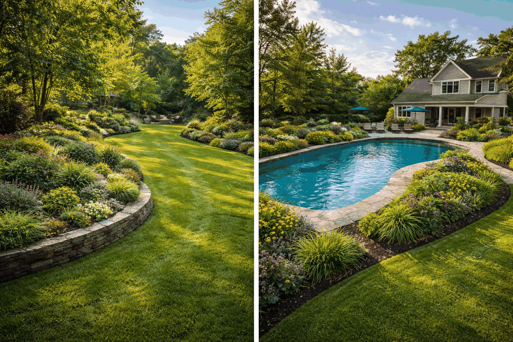

What makes the work different?
Use this card to talk about medium, mood, inspiration, or the type of atmosphere your art brings into a room.
About the artist
This template keeps the About page warm, approachable, and useful. It gives room for inspiration, medium, process, collector expectations, and the kind of details that help handmade work feel worth buying.

Artist statement
Use this area to explain what you make, what materials you love, what kinds of commissions you accept, and why your work feels personal. This page is especially useful for pastel artists, portrait artists, nursery art shops, travel-scene painters, and creators who want a softer handmade presentation.
It is also a good place to set expectations around turnaround time, framing, shipping, custom work, and the emotional side of the artwork so potential buyers feel more confident reaching out.
What buyers want to know
Use this card to talk about medium, mood, inspiration, or the type of atmosphere your art brings into a room.
Clarify whether you offer originals, limited prints, framed pieces, custom portraits, or nursery artwork.
Explain your general workflow so visitors know what happens after they send an inquiry.
Creative strengths
Warm, lived-in palettes that photograph beautifully for listings, lookbooks, and styled room mockups.
Framed mockups help visitors picture the piece in their own home instead of seeing a flat product-only view.
The full site supports custom work inquiries without making the brand feel stiff or overly corporate.